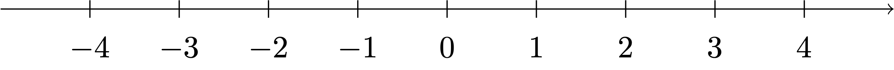
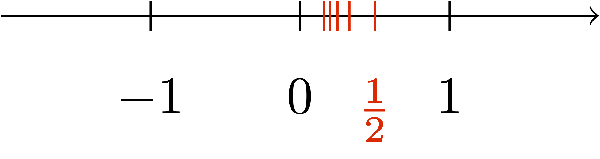
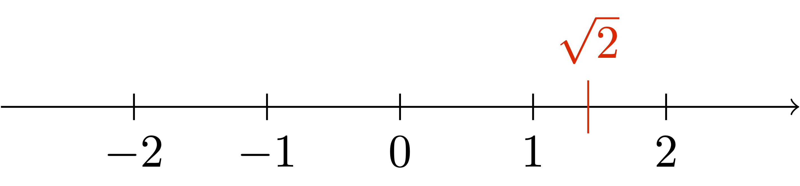

1 Numbers
1.1 Introduction
The aim of this chapter is to rigorously introduce the set of real numbers \(\mathbb{R}\). But what do we mean by real numbers? To start our discussion, introduce the set of natural numbers (or non-negative integers) \[ \mathbb{N}= \{0,1,2,3,4,5,\dots\} \] On this set we have a notion of sum of two numbers, denoted as usual by \[ n+m \] for \(n,m \in \mathbb{N}\). Here the symbol \(\in\) denotes that \(m\) and \(n\) belong to \(\mathbb{N}\). For example \(3+7\) results in \(10\).
Question
The answer to the above question is clearly no. For example, take \(n=10\) and \(m=1\). Then \(x = -9\), which does not belong to \(\mathbb{N}\). We therefore need to extend the set \(\mathbb{N}\) in order to invert the sum. This is done simply by introducing the set of integers \[ \mathbb{Z}:= \{ -n,n \, \colon \, n \in \mathbb{N}\} \,, \] that is, the set \[ \mathbb{Z}:= \{ \ldots, -3,-2,-1,0,1,2,3,\ldots \} \,. \] The sum can be extended to \(\mathbb{Z}\), by defining \[ (-n) + (-m) := - (m+n) \tag{1.1}\] for all \(m,n \in \mathbb{N}\). Now every element of \(\mathbb{Z}\) possesses an inverse, that is, for each \(n \in \mathbb{Z}\), there exists \(m \in \mathbb{Z}\), such that \[ n + m = 0 \,. \] What is \(m\) for a given \(n\)? Seeing the definition at (1.1), we simply have \[ m = - n \,. \] We can also multiply integers, in the usual way we learnt in school. For \(n,m \in \mathbb{Z}\), we denote the multiplication by \(nm\).
Question
The answer is of course no. Just take \(n=2\) and \(m=1\). The answer should be \(1/2\), but \(1/2\) does not belong to \(\mathbb{Z}\). Thus, in order to invert the multiplication, we need to extend the set of integers. This extension is called the set of rational numbers, defined by \[ \mathbb{Q}:= \left\{ \frac{m}{n} \, \colon \, m,n \in \mathbb{Z}, \, n \neq 0 \right\} \,. \] In \(\mathbb{Q}\) the multiplication is invertible, and each non-zero element has an inverse: the inverse of \(m/n\) is given by \(n/m\). Moreover by construction \[ \mathbb{N}\subset \mathbb{Z}\subset \mathbb{Q}\,. \]
Question
It is clear how to draw \(\mathbb{Z}\), as seen below.

However \(\mathbb{Q}\) is much denser than the elements of \(\mathbb{Z}\) represented in Figure 1.1. For example, consider \(0 \in \mathbb{Q}\).
Question
There is no right answer to the above question, since whichever rational number \(m/n\) you consider, we can always squeeze the rational number \(m / (2n)\) in between: \[ 0 < \frac{m}{2n} < \frac{m}{n} \,. \] For example think about the case of the numbers \(1/n\) for \(n \in \mathbb{N}\) and \(n \neq 0\). Such numbers get arbitrarily close to \(0\), as depicted below.

Maybe if we do the same reasoning with other progressively smaller rational numbers, we manage to fill out the interval \([0,1]\). In other words, we might conjecture the following.
Conjecture 1
Do you think the above conjecture is true? If it was, mathematics would be quite boring. Indeed Conjecture 1 is false, as shown by the Theorem below.
Theorem 2
The above theorem is the reason why \(\sqrt{2}\) is called an irrational number. For reference, a few digits of \(\sqrt{2}\) are given by \[ \sqrt{2} = 1.414213562373095048\ldots \] and the situation is as in the picture below.

We can therefore see that Conjecture 1 is false, and \(\mathbb{Q}\) is not a line, given that it has a gap at \(\sqrt{2}\). Let us see why Theorem 2 is true.
Proof: Proof of Theorem 2
Seeing the above, we might be tempted to just fill in the gap by adding \(\sqrt{2}\) to \(\mathbb{Q}\). However, with analogous proof to Theorem 2, we can prove that \[ \sqrt{p} \notin \mathbb{Q} \] for each prime number \(p\). Thus \(\mathbb{Q}\) has infinite gaps (recall that there are infinite prime numbers). Then we might attempt to fill in these gaps via the extension \[ \tilde{\mathbb{Q}} := \mathbb{Q}\cup \{ \sqrt{p} \, \colon \, p \, \text{ prime} \} \,. \] However even this is not enough, as we would still have numbers which are not contained in \(\tilde{Q}\), for example \[ \sqrt{2} + \sqrt{3} , \, \pi , \, \pi + \sqrt{2} \notin \tilde{\mathbb{Q}} \,. \] The reality of things is that to complete \(\mathbb{Q}\) and make it into a continuous line we have to add a lot of points. Indeed, we need to add way more points than the ones already contained in \(\mathbb{Q}\). Such extension of \(\mathbb{Q}\) will be called \(\mathbb{R}\), the set of real numbers. The inclusions will be \[ \mathbb{N}\subset \mathbb{Z}\subset \mathbb{Q}\subset \mathbb{R}\,. \] The set \(\mathbb{R}\) is not at all trivial to construct. In fact, at first we will just assume its existence and study its properties. We will then provide a concrete model for the real numbers \(\mathbb{R}\), to prove once and for all that such set indeed exists.